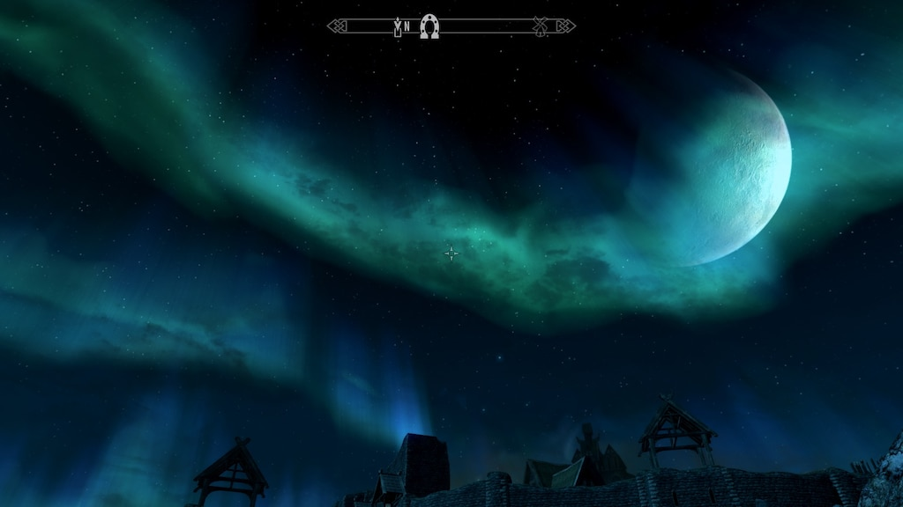
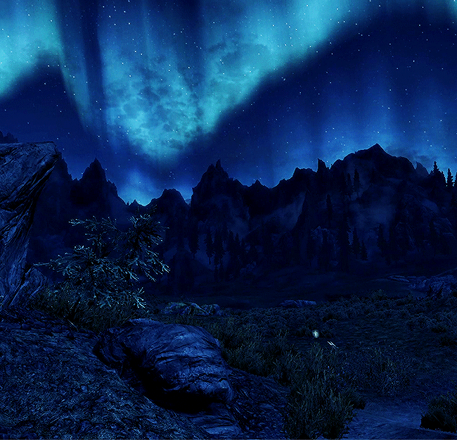
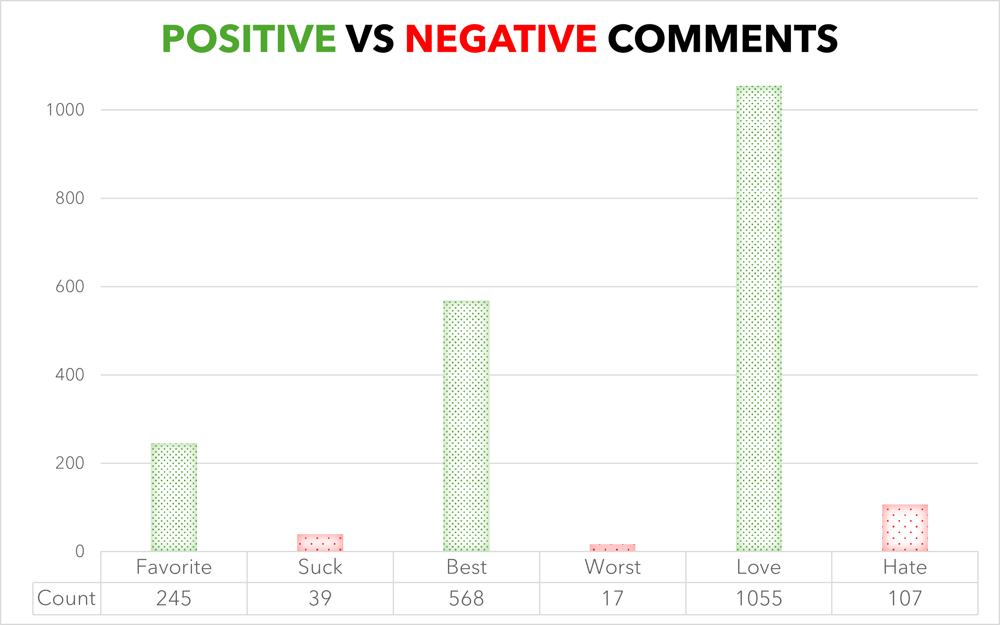
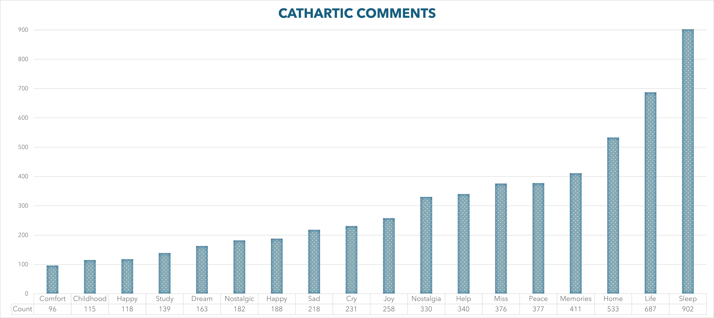
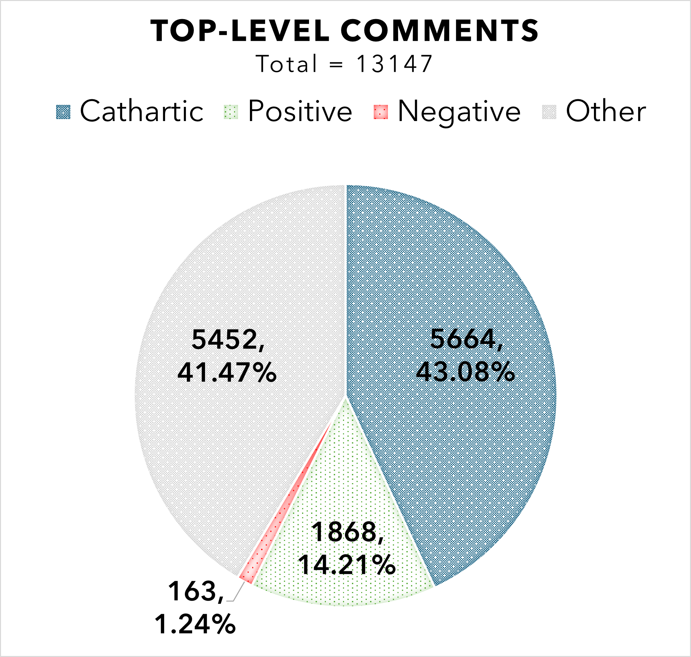

Skyrim Helps 903 of Us Sleep: How Its Score Cast a Cathartic Spell on Millions
You awaken feeling well rested.

Skyrim, the popular fifth entry in the main line of Bethesda’s Elder Scrolls series. A game that many have loved for years. It’s loved so well that there have been multiple re-releases since 2011. Comparing to the film industry, it took Revenge of the Sith 20 years to have a re-release in the theaters even though it made just shy of 850 million in revenue. Few games have reached Skyrim’s level of staying power.
Starting as a star according to the Boston Consulting Index, we can see that Skyrim is truly Bethesda’s highest cash cow, bringing in revenue like the thieves guild themselves. Not by stealing, of course, but by very well planned marketing tactics and a successful score. I want to hit on a point of what has probably kept this cash cow mooing that is often overlooked in the gaming industry and that is the score. Not just keeping score or upgrades, the score as in CDEFGAB.
Jeremy Soule has been in my opinion one of the greatest composers of our millennial/gen-z gaming day. Hans Zimmer, John Williams, and many others are so popularized among the film industry and deserve that triumph. Soule, however, did something that only video games do over film, he sets you in a literal ambience, a nostalgic hook, catch and release. The emotional weight of Soule’s music shows up not just in memories, but in comments. Below are two comments from fans on a long playlist on YouTube, currently with over ten thousand likes per comment.
This makes my heart hurt and long for a past time in my life. Not just for the game, but the memories that surrounded it as well. Its funny how fast life can change.. don’t take things for granted.
It's crazy how you can get homesick for a world that doesn't even exist. Jeremy Soule outdid himself on this OST.
These comments really illustrate the pyramid of nostalgia that can emerge from the combination of playtime and good music for a loyal consumer. I doubt Jeremy Soule expected comments like those would be made when he was meticulously creating the score. I am sure Soule wanted to make the score memorable but those comments reveal a rare and golden bond with the consumer.
My Story With the Score of Skyrim
I remember 11.11.11 like the back of a draugr while crouched with a drawn bow. I was a 12 year old boy so excited to dive into the northlands. Familiar with Oblivion prior, I was too young to really be married to the depth of the world of Tamriel. The first time hearing those chords and the plant of a cello with those magical harp arpeggiations walking through the streets of Whiterun was special. A place that even as I am writing this I get a little teary eyed thinking about the music and reminiscing on my childhood. It conveyed so much emotion then and still does even now when “The Streets of Whiterun” shows up on my playlist while driving backroads in Montana or Utah.
“Secunda” is an ethereal track that grasps attention, and if I close my eyes, I see nirnroot every time I hear it. There is a certain dignity that the music of Skyrim truly carries. “From Past to Present” is one song in the top of Jeremy Soule’s list on Apple Music that is well loved. Really what I am trying to say is that this music is not meant to only stay in Skyrim.

Now to the title of this article and what I believe this score has evolved into for many, catharsis. As time has spanned since being that 12 year old boy, I have begun to realize the weight the world truly has to carry with busy lifestyles. It can be hard to fall asleep sometimes. Skyrim’s score has helped me fall asleep and at the time of writing this I have 592 plays from the 10 hour Skyrim Night video on YouTube. A lot of people use sound machines and in my circle of friends I know a handful that also use music as an aid to fall asleep. I was curious and wanted to see how many others also use this score to help them sleep. Enough of my opinion, let’s hear from the fans.
The Data
Well I did it: a data scrape. I took the top three YouTube videos of Skyrim Night playlists with over 10 million views each and filtered keywords among a combined total of 13,147 top-level comments. Top-level comments mean main comments. The scrape does not include replies to the top-level comments. Here are the videos I pulled data from,
Below are the comments from the haters and most likely skooma users.

I just typed in the simple positive words that first come to mind for an English speaking human, favorite, best, and love. I figured antonyms on the right side with suck, worst, and hate would be good competitors like the Imperials to the Stormcloaks. As we can see, there are significantly more positive comments about Jeremy Soule’s score than negative comments. Now for the real ones…

Oh! Hey catharsis! How are you? Looks like you have a lot of friends here. Yeah I wasn’t wrong with how many people also love this score for reasons in connecting emotionally. Of course the bias is only drawing from these top three YouTube videos but the data is there.

As we can see above, the cathartic keywords outweigh positive, negative, and even all the other comments. So how did Jeremy Soule possess us all with his powerful vessel known as Sleep? Sorry I don’t know why that previous sentence is still there. I meant how has Jeremy gotten a grip on helping 902 others and me sleep to his beautiful score 14 years after the release?
Before we explore the recipe of how he did it, let’s first look at the numbers for some perspective. I asked ChatGPT to give me a deep dive on Jeremy Soule’s keys to his successful score. Chat pulled a source from an Esports post and it states that Skyrim is the third highest streamed video game score.
The following is from a sketchy website so I don’t know if their data scraping is entirely accurate. According to Kworb, as of April 2025, Jeremy Soule’s Skyrim is at 963,584,658 streams on Spotify alone. This would prove that Toby Fox’s Undertale is still at #1 with a number of 2,027,090,342 streams proving the esports post to be credible.
So yes, the numbers are there. But that leaves us with one big question:
What did Jeremy do to make his Soule speak to millions of souls? 👻
The Alchemy
A Harvard article states that,
Music also lights up nearly all of the brain — including the hippocampus and amygdala, which activate emotional responses to music through memory; the limbic system, which governs pleasure, motivation, and reward; and the body’s motor system.
The brain’s elaborate receptivity to music means that “lots of different things are going on simultaneously,” so music “ends up being encoded as a rich experience.”
Taken from Paul Dean’s 2013 blog a quote Jeremy Soule himself in an interview states,
“I set out to create a theme that would talk to you. There’s an element of thematic purpose… You want to create something that you feel will be durable, that will go the distance.”
Clearly the hard work that Jeremy put in panned out in the long run. The short run approach was not the emphasis and this definitely worked in Bethesda’s favor. Todd Howard really scored on this one. *ba dum tsss*
How Soule did the composing is of argument even to this day but I found this using the wayback machine,
To prove it isn’t disinformation, I found the reply to the post on X from July 7, 2018 even though Jeremy Soule deleted his account since then.
I am flabbergasted that everything was entirely digital excluding the 30-man choir. So that means the dulcimer, strings, lute, timpani and many more instruments you hear in the score are all MIDI controlled. Wow. The orchestra and sections of the choir were done with advanced breath control software.
The Conclusion
I want to share a marketing nugget I found. In January of 2024 an article published by two renowned marketing researchers states that the experience tied with the product is more important than just the product,
…marketing strategies focusing on creating positive experiences and highlighting the added value provided by brands are crucial in capturing attention and winning the hearts…
Bethesda sure won my heart with this masterpiece. Skyrim still has memes being made to this day and still has an active fanbase. As I write this, the concurrent player base in the last 24 hours is 357,317 on Steam alone. I am sure a similar or higher amount is being played on the consoles as well.
In the end the key is to focus on making the best experience you can for the consumer. It might take a couple “restless” nights to get to that “well rested” bonus but it will be worth it in the long run. 10% more is always worth it. If you got that reference, you’re in.
*hits Secunda for the 593rd time